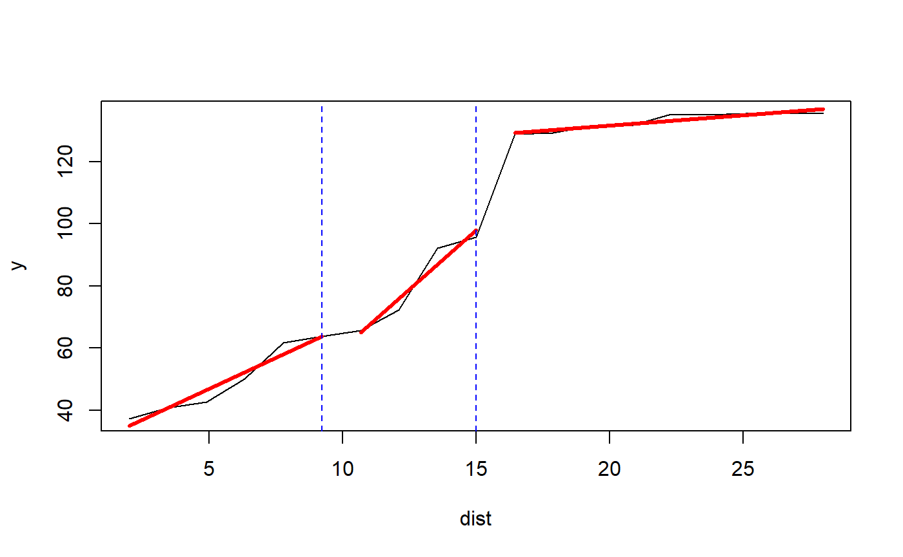
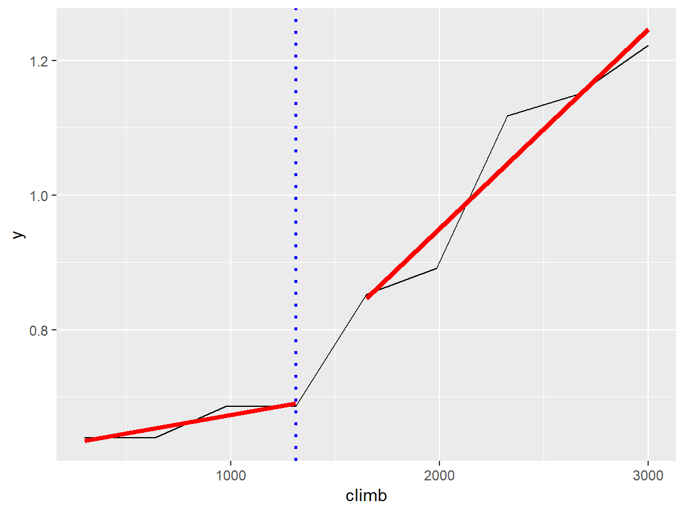
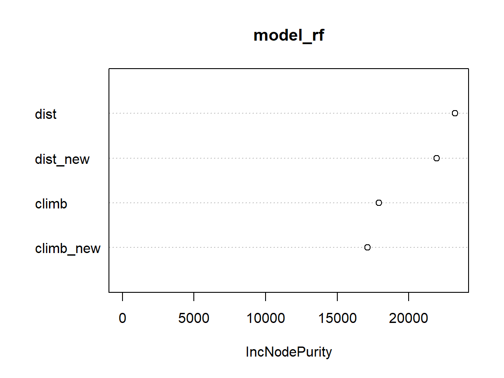

example_hills.Rmdset.seed(111)
hills_rf_model <- randomForest(time ~ ., data = hills)
explainer <- explain(hills_rf_model, data = hills[,c(1,2)], y = hills[,3])Package strucchange + type linear:
data <- transform_variables(explainer, hills[,c(1,2)], package = "strucchange", type = "linear", plot = TRUE)
| dist | climb | dist_new | climb_new | |
|---|---|---|---|---|
| Greenmantle | 2.5 | 650 | 36.90257 | 46.95293 |
| Carnethy | 6.0 | 2500 | 50.91098 | 67.46352 |
| Craig Dunain | 6.0 | 900 | 50.91098 | 44.17030 |
| Ben Rha | 7.5 | 800 | 56.91458 | 45.28335 |
| Ben Lomond | 8.0 | 3070 | 58.91578 | 68.11322 |
| Goatfell | 8.0 | 2866 | 58.91578 | 67.88069 |
data <- cbind(hills[,3], data)
colnames(data)[1] <- 'time'
set.seed(111)
model_rf <- randomForest(time ~ ., data = data)
varImpPlot(model_rf)
model_lm <- lm(time ~ ., data = data)
summary(model_lm)
#>
#> Call:
#> lm(formula = time ~ ., data = data)
#>
#> Residuals:
#> Min 1Q Median 3Q Max
#> -21.299 -4.668 -1.611 1.498 58.459
#>
#> Coefficients:
#> Estimate Std. Error t value Pr(>|t|)
#> (Intercept) -41.440770 17.160635 -2.415 0.0220 *
#> dist 2.301642 1.515737 1.518 0.1394
#> climb 0.004022 0.004671 0.861 0.3961
#> dist_new 0.903374 0.350531 2.577 0.0151 *
#> climb_new 0.361377 0.452909 0.798 0.4312
#> ---
#> Signif. codes: 0 '***' 0.001 '**' 0.01 '*' 0.05 '.' 0.1 ' ' 1
#>
#> Residual standard error: 13.33 on 30 degrees of freedom
#> Multiple R-squared: 0.9374, Adjusted R-squared: 0.9291
#> F-statistic: 112.3 on 4 and 30 DF, p-value: < 2.2e-16